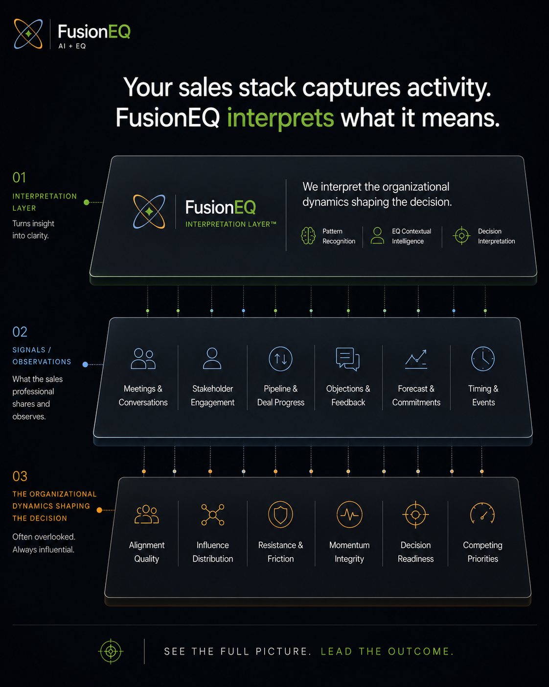

Buyer Questions
Common questions before a Deal Readiness Report.
FusionEQ can work with the deal context your team already has, including existing notes, recordings, reports, or a guided intake form.
Fusion: Where Emotional Intelligence meets Artificial Intelligence
How FusionEQ Works
A focused read of evidence, readiness patterns, and the next buyer-owned action.
FusionEQ starts with the information your team already has, reads it for evidence and readiness patterns, and returns a practical Deal Readiness Report showing what is proven, what remains unproven, and what buyer-owned action would create clarity next.
New to FusionEQ AI? Start with the short solution overview.
The Operating Model
Share the notes, meetings, stakeholder signals, forecast assumptions, buyer questions, and field judgment already surrounding the opportunity.
FusionEQ reviews the context for readiness patterns, decision ownership, alignment, urgency, influence, and buyer-owned movement.
The report identifies what has been evidenced, what remains unproven, the pattern FusionEQ is seeing, and the Recommended Next Move.
The pipeline shows what has been recorded. FusionEQ clarifies what the team should address next.
What the Report Gives the Team
The signals, actions, and buyer behaviors that support the current read.
The assumptions, gaps, or readiness questions that should not be treated as proven yet.
The readiness pattern shaping the deal: ownership, alignment, momentum, urgency, or risk.
The buyer-owned action most likely to create clarity and strengthen the decision path.
The value is not more activity. The value is stronger deal judgment before the next move.
Where FusionEQ Fits

FusionEQ does not replace CRM, conversation intelligence, forecasting, or revenue intelligence platforms. It adds an interpretation layer focused on decision readiness.
Why It Matters
A deal can appear active while decision work is still incomplete. FusionEQ helps the team see where alignment, ownership, urgency, or momentum needs attention while the deal can still be influenced.
The purpose is to help the salesperson and manager choose the highest-value next move together.
When to Use It
Decision ownership is unclear Who is carrying the decision when the seller is not in the room?
Alignment is not proven Are engaged stakeholders aligned around the same decision?
Momentum is hard to interpret Is the buyer creating movement, or is the team carrying the motion?
Coaching needs sharper language Can the manager and seller discuss evidence, readiness, and buyer clarity with precision?
Buyer Questions
FusionEQ can work with the deal context your team already has, including existing notes, recordings, reports, or a guided intake form.
The process begins with deal context: a live opportunity, forecast concern, buyer-readiness question, or recurring pipeline pattern. FusionEQ reviews that context and returns a structured Deal Readiness Report.
No. The intake form is available when a guided format is helpful, but FusionEQ can also work from existing notes, recordings, call summaries, CRM context, forecast reviews, presentations, or reports your team already has.
Useful context may include deal notes, meeting summaries, stakeholder signals, buyer questions, forecast assumptions, decision criteria, next steps, presentation feedback, and the specific readiness questions the team wants clarified.
No. For the initial Deal Readiness Report, FusionEQ prefers anonymized or de-identified deal context. Please do not include end-customer names or sensitive account details unless we specifically agree they are needed.
Those platforms can show captured activity, interactions, deal health signals, risk indicators, and forecast patterns. FusionEQ adds a decision-readiness interpretation layer: what the available evidence may mean about buyer alignment, ownership, momentum, and the next move.
FusionEQ reviews the request, clarifies fit and scope, and identifies the right next step: a Deal Readiness Report, Foundations, FusionEQ LENS™, FusionEQ READ™, FusionEQ CLEAR™, or a focused consultation.
Education is useful when a team wants to build the discipline behind the report: separating activity from evidence, naming assumptions, recognizing readiness patterns, and choosing next moves that create buyer clarity.
Where to Go Next
Understand the evidence, readiness patterns, and buyer clarity signals FusionEQ is built to read.
02 View a sample reportSee the customer-facing output: evidence, pattern, forecast confidence, and Recommended Next Move.
03 Request Deal Readiness ReportBring a deal, forecast concern, or buyer-readiness question that needs stronger evidence and clearer next action.